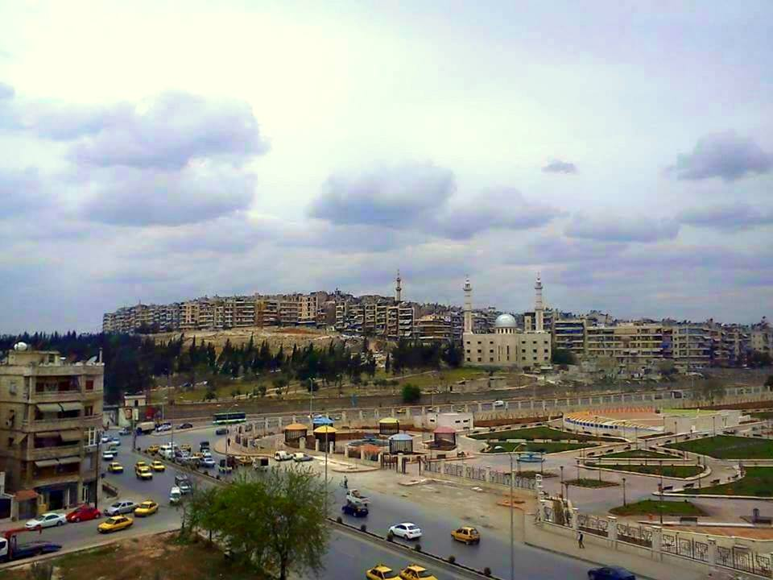

Introduction
In this case study, I explore how war is creating and redesigning Aleppo’s urban boundaries along lines of factional control.
The original idea for this case study was to visualize how frontlines between opposing groups in Aleppo have shifted over the course of the Syrian Civil War. However, data from various sources show that areas of control have remained relatively stagnant. While territory has frequently changed hands in Aleppo’s periphery and the greater Aleppo Governorate, that is not the case within the city itself. Acting on this observation, I focus instead on how territorial stability is reorganizing the city’s internal borders and becoming spatially expressed within the city fabric.
To get an accurate reading of Aleppo’s wartime boundaries, I break down my analysis into two parts: 1) Determining where factional frontlines have been established, 2) Studying the form and character of specific boundary areas.
For the first part, I look at reported areas of influence by neighborhood to mark the frontlines between Syrian Regime forces, the various groups of the Opposition, and Syrian Kurdish forces. I then use the location of permanent military checkpoints to trace where harder boundaries have formed. This data was gathered by Caerus between September 2013 and January 2014 through biweekly surveys of 560 Aleppo residents across each of the city’s neighborhoods.
1
I supplemented data from this survey with information on 2013-2014 zones of factional control from UN OCHA and the Assistance Coordination Unit for my analysis. Although these sources are not current, they provide a thorough snapshot of the state of the city’s neighborhoods at the war’s approximate midpoint in late 2013/early 2014. Given Aleppo’s relative territorial stability over the course of the war and the difficulty of accessing consistent data over longer periods, this is a useful point from which to begin studying overall trends.For the second part, I take a closer look at factional borders that have formed in three specific areas of the city. Using data on roadblocks gathered through satellite imagery analysis by the American Association for the Advancement of Science
2
, I explore how these new borders are being defined by both need and existing geographical features.Areas of Influence
This map depicts the groups that exert primary control over each neighborhood of Aleppo, as of late 2013/early 2014. Areas in red are territory of the government’s Syrian Armed Forces, green are territory of the Opposition forces (all secular and Islamist rebel factions, excluding ISIS), yellow are territory of the YPG Syrian Kurdish forces, and black are areas too heavily contested to determine control.
This map has not fluctuated significantly over the course of the war, with the government remaining in control over the newer, western parts of the city and the Kurds maintaining a grip of the northern enclave of Sheikh Maqsoud.
Military Checkpoints
Overlaying the location of military checkpoints on the areas of influence map gives a better sense of exactly where factional borders fall. I limited the data to only checkpoints described as “Permanent (unlikely to relocate)” by the Caerus survey respondents, and include brief descriptions of each checkpoint’s fortifications in the map. Organizing the data in this way helps answer the core question of where the city’s more physical, stable wartime borders are forming, but it also favors the Syrian Armed Forces, who have relatively greater equipment and personnel resources to build and man permanent checkpoints. However, this does not suggest they are the overwhelmingly stronger force, as they still only control 1/3 of the city’s neighborhoods.
Aleppo, City of Borders
Historically, Aleppo is a city that has been defined and redefined by its borders. The Romans, early Muslims, Abuyyids, Ottomans, French, post-independence regimes, and others have all destroyed, adapted, and expanded the borders of the previous period. Radiating out from the Citadel, this has created rings of walls, gates, public spaces, and roadways that all form part of the modern city fabric, even if they no longer mark the city’s most significant edges. Allowing that the war might be one more step in this continuous redrawing of boundaries, I studied satellite imagery of the frontlines and identified three emerging categories of new, wartime borders. In the next sections I will examine a case study of each of the following:
Operational Border: clear boundary that allows the passage of goods and people
Natural Border: boundary formed along existing geographic features
Redefined Border: previously fluid boundary that has been sealed off
Operational Borders: Karaj al-Hajez Crossing
Karaj al-Hajez is the main crossing point for civilians between regime-controlled and opposition-controlled areas of the city. The following maps show the Karaj al-Hajez crossing in 2014 (left side) versus 2012 (right side), and the location of roadblocks in the immediate area as of May 2013.
At the time this data was collected, up to 50,000 people crossed frontlines at Karaj al-Hajez per day.
3
This is the only area of the city where such mass crossings are allowed, making this area an “Operational Border.” Karaj al-Hajez institutionalizes the new internal boundaries of the city, using barricades and a defined “no man’s land” to mark a clear point from which military authorities can control and observe the flow of people and commerce across the frontlines.Karaj al-Hajez on a busy, relatively peaceful day is a gathering and transition point for thousands of city residents. حلب و إدلب, "13-7-2013 حلب - بستان القصر || رصد الازدحام الشديد عند معبر كراج الحجز". Filmed [Jul 2013]. YouTube video, 00:27. Posted [Jul 2013]. https://www.youtube.com/watch?v=SOUtkEs_AXA.
The crossing also serves as a conduit for humanitarian aid from one side of the city to the other. شبكة حلب نيوز H.N.N. "حلب - بستان القصر || منظمة الأمم المتحدة مع الهلال الأحمر يقومون بادخال حصص اغاثية 8-4-2014". Filmed [Apr 2014]. YouTube video, 05:40. Posted [Apr 2014]. https://www.youtube.com/watch?v=C7g817FcTEc.
شبكة حلب نيوز H.N.N. "حلب معبر كراج الحجز | اشتباكات عنيفة بين قوات النظام و الجيش الحر 17 - 9 -2013". Filmed [Sep 2013]. YouTube video, 01:30. Posted [Sep 2013]. https://www.youtube.com/watch?v=AAt-v785lO4. The crossing is operational even in times of intense fighting. However, snipers on either side are known to fire at each other and at civilians, making a traverse of “no man’s land” very dangerous and lending Karaj al-Hajez the nickname "checkpoint of death".
4
Natural Borders: ash-Sheikh Maqsoud
Sheikh Maqsoud, a traditionally Kurdish quarter of Aleppo, has been controlled by locally-organized branches of the YPG Syrian Kurdish forces since the beginning of the war. The following maps show the southern point of Sheikh Maqsoud in 2014 (left side) versus 2012 (right side), and the location of roadblocks in the immediate area as of May 2013.
Shiekh Maqsoud is already a well-defined enclave due to its geography. The neighborhood sits on a hill, bordered to the east by a railroad line, parkland, and the Quiek River, and to the south by a row of cemeteries. This has allowed to YPG to fortify the few entry/exit roads with roadblocks and more easily defend the area from other forces. Interestingly, the main enemy of the YPG is not the regime, but Jabhat al-Nusra, a radical Islamist opposition faction that controls neighborhoods to the east. The YPG has been able to use its geographic buffer to keep al-Nusra across the river, using snipers from the hilltop to stop any advances across exposed parkland. Shiekh Maqsoud and the entrenched control of the YPG in the enclave demonstrate how a "Natural Border" can be easily and effectively transformed into a stable wartime boundary.
5
 Looking northwest at Sheikh Msaqoud across Al-Snoubari Park.
Redefined Borders: Saadallah al-Jabiri Square
Saadallah al-Jabiri Square, built in 1947, is considered the main square for the city of Aleppo. Created as a symbolic public space joining the old eastern city with the newer western half, it has been the site of countless festivals, gatherings, and demonstrations. The following maps show Saadallah al-Jabiri Square in 2014 (left side) versus 2012 (right side), and the location of roadblocks in the immediate area as of May 2013.
The square was the site of pro-Assad propaganda rallies at the start of the war and it continued to be the central public space of the city until 2012, when car bombs targeted it in one of the first acts of mass violence in Aleppo.
6
Since then, it has become a "Redefined Border," transforming a space formerly conectng two sides of the city into a fortified barrier. Syrian regime forces took advantage of the open space to build a network of roadblocks that creates a defensive buffer against Opposition territory furhter east. Note how, in the first image above, all of the square's 2012 traffic has been pushed outward towards the edges of the frame in 2014. In Saadallah al-Jabiri Square, the open and fluid urban fabric allowed war to redefine a boundary of union into a boundary of division.Conclusion
As territorial stability has taken hold within the city of Aleppo, patterns in wartime border creation emerge along factional frontlines. Often using exisitng features of the natural and built environment adapted to wartime use, these borders have begun reorganizing Aleppo's urban fabric in the same way that gates, walls, and roadways did in the past. By analyzing data on areas of influence, location of military checkpoints, and location of roadblocks, it becomes easier to trace exactly where new boundaries are forming and study the unique characteristics that define them. Will these borders have a lasting impact on the internal division of Aleppo, even once the war is over? How would a break in the territorial stalemate impact the flow of goods and people across the city? These questions are key to understanding the power of war to reshape the physical map of a city, both during conflict and long after the fighting ends.
Produced by Alexander N. Cox, for the Conflict Urbanism: Aleppo seminar at Columbia University during Spring 2016. See all student work here.